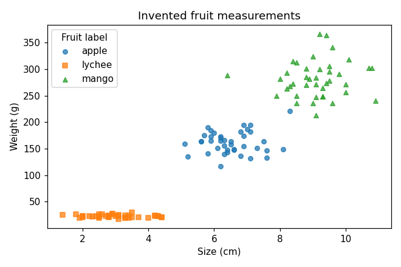
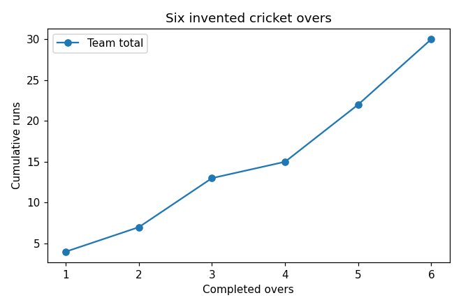
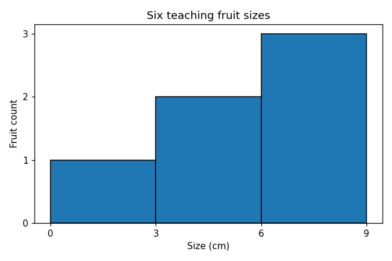

Nana reads six rows of numbers and sees nothing strange. Mina draws a dot for each size and sweetness pair. Five dots form familiar little groups; one large fruit sits far below the other mangoes. Nana points at it immediately. “Check that card,” he says. The picture found a question before anyone chose a model.
Plots help you inspect relationships that a table can hide. Matplotlib draws the values you choose; it cannot decide what they mean. Pick the picture that answers your question, then label its scales and explain the limits of what you can conclude.
You will draw a labelled scatter plot from the shared fruit data, a line for ordered cricket totals and a histogram of sizes. Each program saves an image so it can run without an open graphical window.
A scatter plot places one dot at each pair of measurements. A line plot connects observations with a meaningful order. A histogram counts measurements inside numeric intervals. All three use axes, but their marks mean different things.
| Card | Size (cm) | Sweetness | Label |
|---|---|---|---|
| p1 | 2 | 3 | apple |
| p2 | 3 | 2 | apple |
| p3 | 4 | 3 | apple |
| p4 | 6 | 7 | mango |
| p5 | 7 | 8 | mango |
| p6 | 9 | 1 | mango |
Picture p6 on the right because its size is large, but near the bottom because sweetness is low. It is unlike the other mangoes in these two measurements. That observation suggests checking the record. It does not prove that the fruit was mislabelled or that a large fruit causes low sweetness.
The lesson’s saved scatter image uses all 120 shared fruits instead. The small six-card picture appears in the quiz and worksheet for paper reading. Distinguish the two datasets before comparing their patterns.
Start a figure and axes with plt.subplots(). The figure is the whole saved image; the axes hold a plotted view and its scales. For a fruit scatter, choose size_cm for x and weight_g for y. One row gives one paired position. Select each fruit label and draw its rows with a different marker and colour.
Add an x label with centimetres and a y label with grams. A legend tells the reader which marker belongs to each fruit label. A title says that these are invented measurements. Neither colour nor shape should be the only path to meaning when you can provide both. The first program uses circles, squares and triangles.
For ordered data, connect points only when neighbouring observations have a useful relationship. The cricket example uses totals [4,7,13,15,22,30] after overs [1,2,3,4,5,6]. From over 4 to over 5, the total rises from 15 to 22, an increase of 7. The line represents cumulative totals, not the number of runs scored separately in every over.
A histogram discards individual pairing and counts values by range. With sizes [2,3,4,6,7,9] and edges [0,3,6,9], the first interval [0,3) contains only 2. The second [3,6) contains 3 and 4. The final [6,9] includes 6, 7 and 9. Counts are [1,2,3], and their sum is six. The last right endpoint is included by NumPy’s and Matplotlib’s bin convention.
state the question and choose the plot select paired values or one measured distribution create a figure and axes draw marks with a documented meaning add title, units and any legend save the figure, then close it read the picture and investigate surprises
Set the Agg backend before importing pyplot for scripts that save files. Use fig.savefig with a filename such as fruit-scatter.png. tight_layout helps prevent labels being cut off. Close the figure after saving so repeated runs do not leave many unused figures in memory.
Look for nearby groups, rising or falling trends and unusual points. Overlapping dots can hide multiple records; transparency or smaller markers can help. Axis limits also influence appearance. State when a plot omits extreme values or uses a restricted range, and do not choose scales merely to make a weak pattern look dramatic.
Sketch the six teaching fruits and mark p6. Ask what evidence would distinguish a rare valid fruit from an entry error. For the cricket line, compute the increase during over 6 before inspecting the segment. For the histogram, move size 3 slightly below 3 and predict which two bin counts change.
Draw axes on a classroom floor with chalk. Six classmates stand at the teaching fruit coordinates. Ask whether connecting them in arrival order would describe a meaningful journey. Next, rearrange the same classmates into size intervals and count each group. The scatter positions and histogram counts answer different questions about the same cards.
The scatter program uses the shared 120-row CSV. Similar plotted positions indicate similar size and weight only; the other features are not displayed.

The line program uses six ordered cricket observations. Its markers identify recorded totals; connecting segments do not add new measurements between overs.

The histogram program prints the computed bin counts as well as saving the picture. Compare those numbers with your paper grouping.

Fruit file order is not a time sequence. A line through it can invent a path. Use scatter for paired unordered measurements.
An isolated point can be a unit error or a valid unusual case. Inspect its source record and collection context before making a correction or exclusion.
A number without a unit can reverse an interpretation. Put units beside measurement names, and distinguish cumulative totals from counts during each interval.
With equal-width histogram bins, comparing count heights is direct. For unequal widths, raw bar heights can be misleading because wider bins collect more observations. A density histogram instead uses count divided by sample count and bin width, so bar area represents relative frequency. Our three bins all have width three and use count heights. A different choice of edges can change the apparent shape without changing any measurement.
Apply the tools in the Python tools practice sheet.